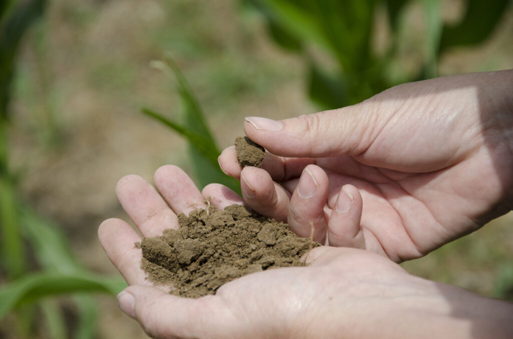
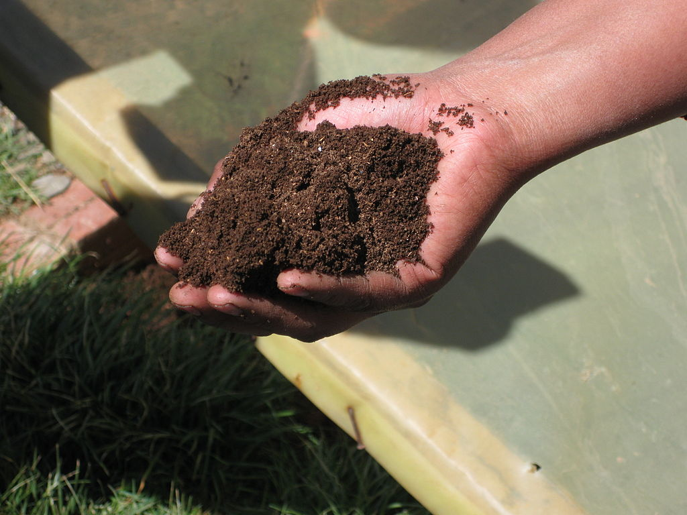
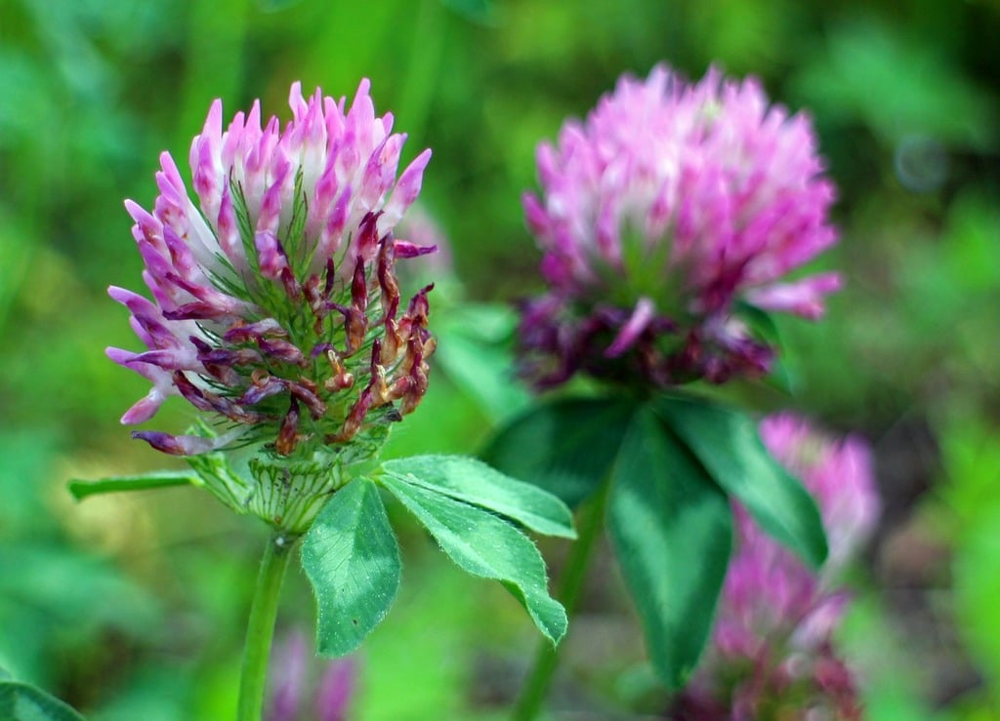
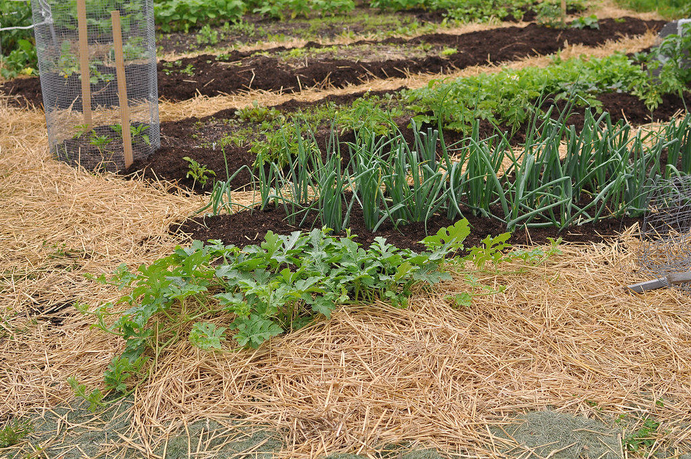
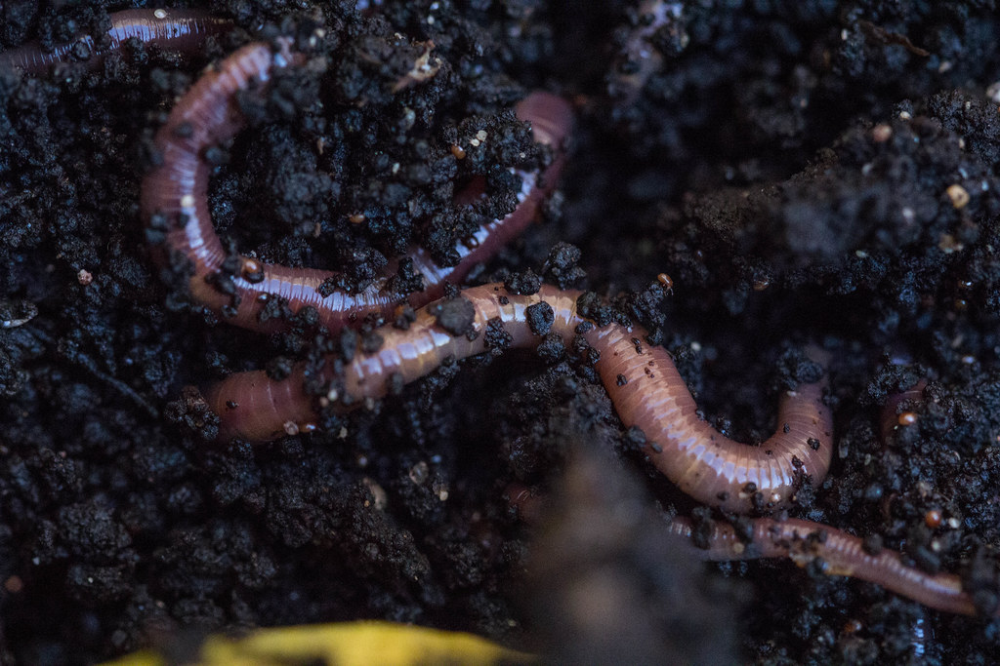
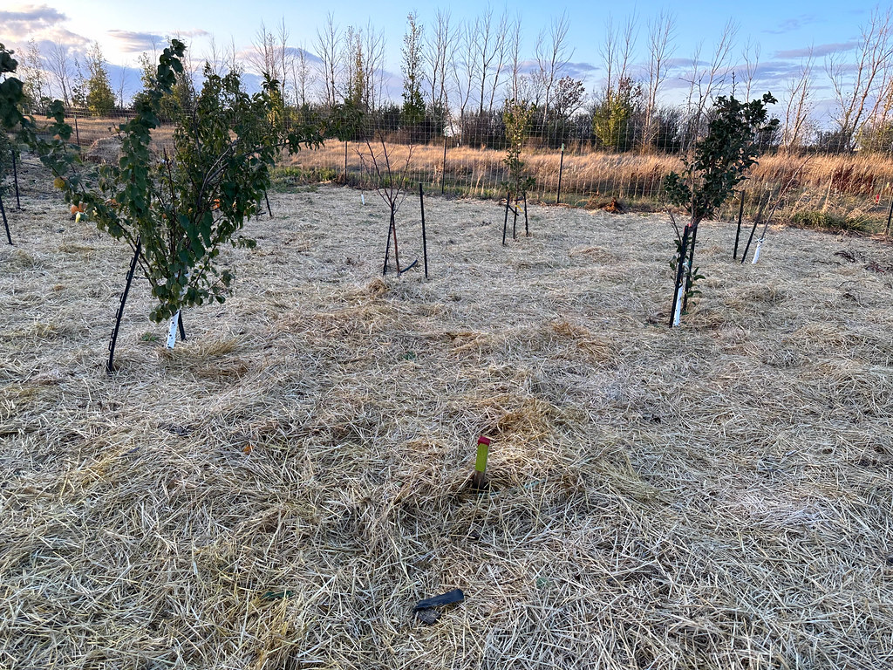
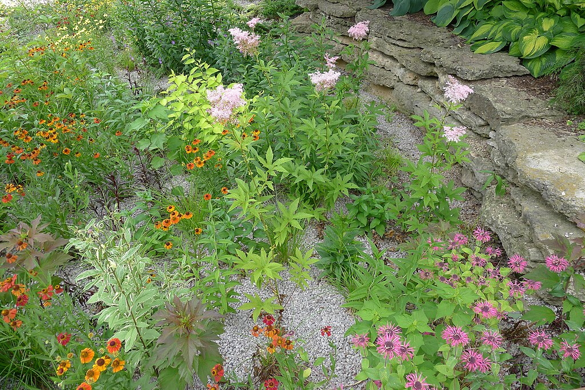
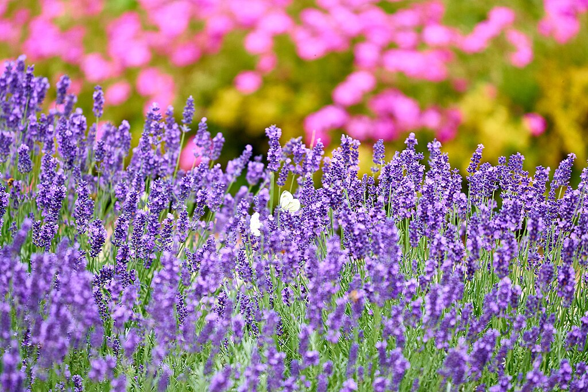
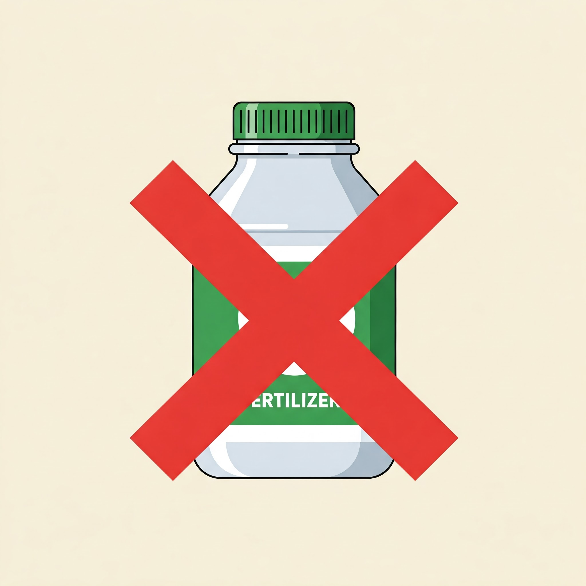

Soil health is the foundation of a thriving landscape. Compaction, repeated disturbance, exposed soil, poor drainage, depleted organic matter, and unsuitable management practices can leave a property increasingly dependent on irrigation, fertilizer, weed control, and repeated intervention.
Regenerative landscaping approaches the problem from the other direction. Rather than treating each symptom independently, it asks how soil structure, water, roots, organic matter, and biological activity can work together as a functioning system.
Restoration is rarely instant. The useful goal is to move the soil gradually toward conditions that support healthier roots, better infiltration, greater biological activity, and a more resilient landscape.
What Regenerative Landscaping Is Trying to Accomplish
The methods used on any particular property will vary, but the underlying principles are fairly consistent.
Return organic matter, protect aggregation, and avoid unnecessary practices that continually break soil structure apart.
Slow runoff, improve infiltration, reduce evaporation, and place irrigation where roots can actually use it.
Plants protect soil, feed soil organisms, occupy rooting niches, and contribute organic material over time.
Digging, tillage, cultivation, traffic, and repeated soil handling all have consequences. Use them deliberately rather than automatically.
A landscape that becomes progressively healthier should depend less on repeated corrective intervention, not more.
Begin by Understanding the Soil You Have
Diagnose before treating.

Before adding amendments or changing the landscape, learn what is actually happening below the surface. Soil texture, drainage, compaction, pH, nutrient status, organic matter, existing roots, and previous construction or grading can all shape the problem.
A laboratory soil test can be useful for understanding pH and nutrient conditions. Field observations are equally important: Does water infiltrate or run off? Is the soil difficult to penetrate? Are roots concentrated near the surface? Does the ground remain saturated after rain?
Return Organic Matter
Feed the soil while improving its physical environment.

Organic matter is central to healthy soil. Compost, leaf material, decomposing roots, and other plant residues provide material that participates in nutrient cycling and helps support soil organisms.
The goal is not simply to add something once. Healthy landscapes continually produce and recycle organic material. Designing that process into the property is more durable than treating organic matter as a one-time product.
Keep Living Roots in the Ground
Bare soil is usually an opportunity waiting to be filled.

Cover crops such as clovers, grasses, and other useful species can protect exposed ground while producing roots and above-ground biomass.
In garden or restoration settings, the appropriate species depends on the season, goals, available moisture, and what will follow. The principle is broader than any particular crop: soil generally benefits from being occupied by plants rather than remaining exposed for long periods.
Protect the Surface with Mulch
Cover the soil while decomposition works from above.

Wood chips, shredded leaves, straw, and other suitable organic materials can protect the soil surface from direct sun, erosion, and rapid moisture loss.
As organic mulch decomposes, it also becomes part of the soil-building process. Around trees and woody plants, keep mulch off the trunk and root flare rather than piling it into a mound against the bark.
Create Conditions for Soil Life
Biology responds to habitat.

Healthy soil contains a complex community of organisms that participate in decomposition, nutrient cycling, aggregation, and plant-soil relationships.
Rather than treating biology as something that can simply be poured onto a property, begin with habitat: organic matter, living roots, reasonable moisture, oxygen, and reduced unnecessary disturbance.
Disturb Soil Deliberately, Not Habitually
Sometimes soil needs intervention. It rarely needs endless intervention.

Repeated tillage breaks apart soil structure and leaves the surface vulnerable to erosion and recompaction. In many gardens, sheet mulching, top-dressing, broadforking, or other lower-disturbance methods can replace routine inversion of the soil.
That does not mean soil should never be disturbed. Severe compaction, construction damage, installation work, or other specific problems may justify mechanical intervention. The important distinction is whether disturbance is solving a diagnosed problem.
Manage Water as Part of the Landscape
Slow it, spread it, infiltrate it, and use it where appropriate.

Water is both a resource and a source of landscape problems. Fast runoff can erode soil and leave higher areas dry, while poor drainage can keep roots saturated.
The appropriate solution depends heavily on grading, soil, rainfall, structures, utilities, and where excess water can safely go.
Build the Landscape Around Adapted Plants
Plant selection determines much of the maintenance burden that follows.

Native and well-adapted perennial plants can reduce the gap between what a site naturally supports and what the landscape continually demands from irrigation, fertilizer, pest control, and replacement.
Perennials also maintain root systems over multiple seasons, helping protect soil and contributing organic material through roots, litter, and normal plant turnover.
Recycle Organic Material Locally
Waste streams can become soil-building resources.
On larger properties, livestock or poultry may be integrated into land management where the site and management plan make that appropriate.
At residential scale, composting and vermicomposting offer a simpler application of the same principle: capture useful organic material and return it to the soil rather than treating every biological residue as waste.
Use Inputs to Solve Specific Problems
Management should become more precise as the landscape becomes healthier.

Fertilizers, pesticides, amendments, and other products are tools. A regenerative approach asks whether the tool is actually needed, what problem it is solving, and whether the underlying site conditions can be improved instead.
Soil testing, correct plant selection, appropriate irrigation, mulch, organic matter, and better maintenance practices can often reduce the frequency of corrective inputs over time.
What Improvement Looks Like Over Time
Soil restoration is gradual. A successful landscape may not announce its progress dramatically; instead, it begins to function better.
Rainfall infiltrates more effectively and useful moisture remains available longer.
Plants develop into soil that offers better structure, aeration, moisture, and biological activity.
The landscape becomes less vulnerable to normal periods of heat, dryness, and disturbance.
Better plant selection and healthier soil can reduce the need for repeated corrective work.
Plant diversity and organic material provide additional resources for insects, birds, and other organisms.
Management becomes focused on preserving function rather than continually fighting symptoms.
Start with the System, Not the Product
There is no single amendment, mulch, cover crop, microbial product, or planting technique that restores every soil.
The durable approach is to understand the site and then improve the relationships between soil structure, organic matter, water, roots, plants, and management.
Start where the property gives you the clearest opportunity. Protect exposed soil. Recycle organic material. Keep living roots growing. Correct water problems where practical. Reduce unnecessary disturbance. Choose plants that fit the site.
Then give the landscape time to respond.